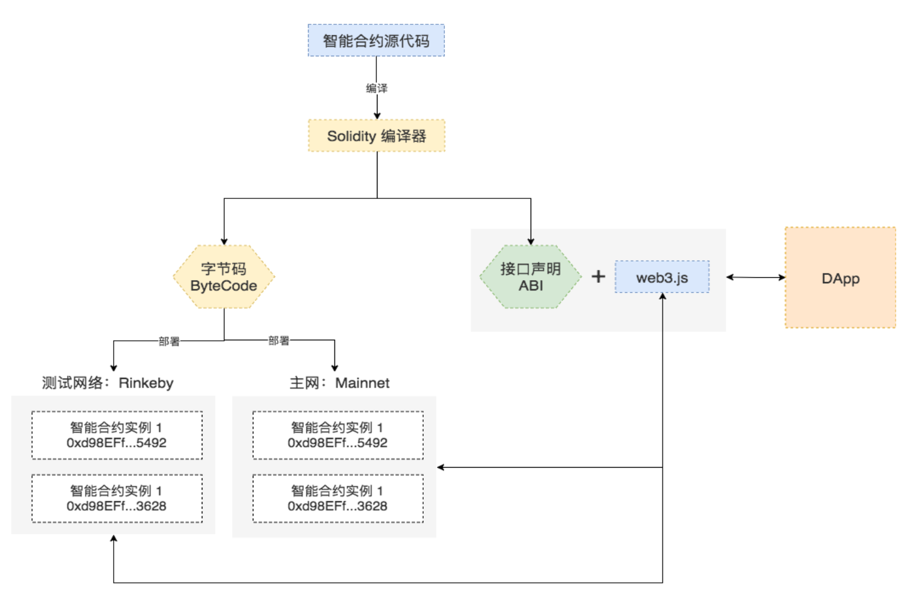
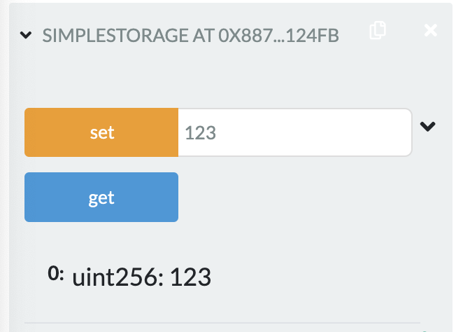

2022.2.20
Solidity语法，简单合约
Solidity的语法接近于JavaScript，是一种面向对象的语言。但作为一种真正意义上运行在网络上的去中心合约，它又有很多的不同:
以太坊底层基于帐户，而不是UTXO，所以增加了一个特殊的 address 的数据类型用于定位用户和合约账户。
Solidity 源代码要成为可以运行在以太坊上的智能合约需要经历如下的步骤:
用 Solidity 编写的智能合约源代码需要先使用编译器编译为字节码 (Bytecode)，编译过程中会同时产生智能合约的二进制接口规范 (Application Binary Interface，简称为 ABI)，（ABI是外部与链交互的通道）;
通过交易(Transaction)的方式将字节码部署到以太坊网络，每次成功部署都会产生一个新的智能合约账户;
使用 Javascript 编写的 DApp 通常通过 web3.js + ABI去调用智能合约中的函数来实现数据的读取和修改。
Remix
Remix 是一个基于 Web 浏览器的 Solidity IDE;可在线使用而无需安装任 何东西
http://remix.ethereum.org
solcjs
solc 是 Solidity 源码库的构建目标之一，它是 Solidity 的命令行编译器
npm install -g solcsolcjs,如果要用命令solc可以自己去alias sloc=slocjs。
pragma solidity ^0.4.0;
contract SimpleStorage {
uint storedData;
function set(uint x) public {
storedData = x;
}
function get() public view returns (uint) {
return storedData;
}
}

注意从solidity 0.5开始，字符串类型需要指定memory！
pragma solidity ^0.8.0;
contract Car {
struct CarInfo {
string brand;
uint price;
}
CarInfo carInfo;
function setBrand(string memory newBrand) public{
carInfo.brand=newBrand;
}
function getBrand() public view returns(string memory) {
return carInfo.brand;
}
function setPrice(uint newPrice) public{
carInfo.price=newPrice;
}
function getPrice() public view returns(uint) {
return carInfo.price;
}
}
另外可以在合约部署的时候传入参数，用到constructor方法
pragma solidity ^0.8.0;
contract Car {
bytes brand=new bytes(12);
uint price;
constructor(string memory newBrand,uint newPrice){
brand=bytes(newBrand);
price=newPrice;
}
function setBrand(string memory newBrand) public{
brand=bytes(newBrand);
}
function getBrand() public view returns(string memory) {
return string(brand);
}
function setPrice(uint newPrice) public{
price=newPrice;
}
function getPrice() public view returns(uint) {
return price;
}
}
pragma solidity >0.4.22 <0.6.0;
contract Coin {
address public minter;
mapping (address => uint) public balances;
event Sent(address from, address to, uint amount);
constructor() public {
minter = msg.sender;
}
function mint(address receiver, uint amount) public {
require(msg.sender == minter);
balances[receiver] += amount;
}
function send(address receiver, uint amount) public {
require(amount <= balances[msg.sender]);
balances[msg.sender] -= amount;
balances[receiver] += amount;
emit Sent(msg.sender, receiver, amount);
}
}
event Sent(address from, address to, uint amount);
声明了一个“事件”(event)，它会在 send 函数的最后一行触发
用户可以监听区块链上正在发送的事件，而不会花费太多成本。一旦它被发出，监听该事件的listener都将收到通知
emit Sent(msg.sender, receiver, amount);
address public minter;
这一行声明了一个可以被公开访问的 address 类型的状态变量。
关键字 public 自动生成一个函数，允许你在这个合约之外 访问这个状态变量的当前值。
mapping(address => uint) public balances;
也创建一个公共状态变量，但它是一个更复杂的数据类型， 该类型将 address 映射为无符号整数。
mappings 可以看作是一个哈希表，它会执行虚拟初始化， 把所有可能存在的键都映射到一个字节表示为全零的值。
事件的监听
Coin.Sent().watch({}, '', function(error, result) { if (!error) {
console.log("Coin transfer: " + result.args.amount + "coins were sent from " + result.args.from + " to " + result.args.to + ".");
console.log("Balances now:\n" + "Sender: " +
Coin.balances.call(result.args.from) +
"Receiver: " + Coin.balances.call(result.args.to));
下面是remix的案例程序
// SPDX-License-Identifier: GPL-3.0
pragma solidity >=0.7.0 <0.9.0;
/**
* @title Ballot
* @dev Implements voting process along with vote delegation
*/
contract Ballot {
struct Voter {
uint weight; // weight is accumulated by delegation
bool voted; // if true, that person already voted
address delegate; // person delegated to
uint vote; // index of the voted proposal
}
struct Proposal {
// If you can limit the length to a certain number of bytes,
// always use one of bytes1 to bytes32 because they are much cheaper
bytes32 name; // short name (up to 32 bytes)
uint voteCount; // number of accumulated votes
}
address public chairperson;
mapping(address => Voter) public voters;
Proposal[] public proposals;
/**
* @dev Create a new ballot to choose one of 'proposalNames'.
* @param proposalNames names of proposals
*/
constructor(bytes32[] memory proposalNames) {
chairperson = msg.sender;
voters[chairperson].weight = 1;
for (uint i = 0; i < proposalNames.length; i++) {
// 'Proposal({...})' creates a temporary
// Proposal object and 'proposals.push(...)'
// appends it to the end of 'proposals'.
proposals.push(Proposal({
name: proposalNames[i],
voteCount: 0
}));
}
}
/**
* @dev Give 'voter' the right to vote on this ballot. May only be called by 'chairperson'.
* @param voter address of voter
*/
function giveRightToVote(address voter) public {
require(
msg.sender == chairperson,
"Only chairperson can give right to vote."
);
require(
!voters[voter].voted,
"The voter already voted."
);
require(voters[voter].weight == 0);
voters[voter].weight = 1;
}
/**
* @dev Delegate your vote to the voter 'to'.
* @param to address to which vote is delegated
*/
function delegate(address to) public {
Voter storage sender = voters[msg.sender];
require(!sender.voted, "You already voted.");
require(to != msg.sender, "Self-delegation is disallowed.");
while (voters[to].delegate != address(0)) {
to = voters[to].delegate;
// We found a loop in the delegation, not allowed.
require(to != msg.sender, "Found loop in delegation.");
}
sender.voted = true;
sender.delegate = to;
Voter storage delegate_ = voters[to];
if (delegate_.voted) {
// If the delegate already voted,
// directly add to the number of votes
proposals[delegate_.vote].voteCount += sender.weight;
} else {
// If the delegate did not vote yet,
// add to her weight.
delegate_.weight += sender.weight;
}
}
/**
* @dev Give your vote (including votes delegated to you) to proposal 'proposals[proposal].name'.
* @param proposal index of proposal in the proposals array
*/
function vote(uint proposal) public {
Voter storage sender = voters[msg.sender];
require(sender.weight != 0, "Has no right to vote");
require(!sender.voted, "Already voted.");
sender.voted = true;
sender.vote = proposal;
// If 'proposal' is out of the range of the array,
// this will throw automatically and revert all
// changes.
proposals[proposal].voteCount += sender.weight;
}
/**
* @dev Computes the winning proposal taking all previous votes into account.
* @return winningProposal_ index of winning proposal in the proposals array
*/
function winningProposal() public view
returns (uint winningProposal_)
{
uint winningVoteCount = 0;
for (uint p = 0; p < proposals.length; p++) {
if (proposals[p].voteCount > winningVoteCount) {
winningVoteCount = proposals[p].voteCount;
winningProposal_ = p;
}
}
}
/**
* @dev Calls winningProposal() function to get the index of the winner contained in the proposals array and then
* @return winnerName_ the name of the winner
*/
function winnerName() public view
returns (bytes32 winnerName_)
{
winnerName_ = proposals[winningProposal()].name;
}
}